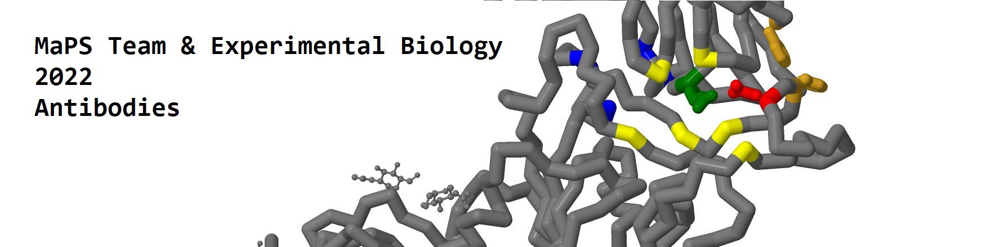

Welcome to my website.
My main interests include philosophy and coding,
but I love learning and doing any sort of cool project.
I go by Ziixx on the internet.
Enjoy your stay.
TwitterSteam
Discord: Ziixx#0787
email me: ltkrier314@gmail.com
Modeling a Protien Story 2022
A research club project culminating in a presentation at the Experimental Biology Conference
Comptuer Desk
I watched a LTT video about a PC that fits in a desk, and thought I can do that.
This has been a cool project that couldnt have been done without my dad.
Fade
a relatively simple platformer; 2 midair jumps + 1 funky mechanic (what the games named after)
Only supports Windows

Fate, Free Will, and the Resultant Optimism
This was not written for a philosophy class, but it pretty much is anyways. This essay compares and contrasts Christianity with Absurdism and concludes that it is fate and free will that give them both their optimism.
An Explication of the Cartesian Self and its Relation to the Body
This is my second philosophy paper. Written for history of philosophy; modern period, It somehow also deals with mental causation with Descartes. I take a different position this time, and is slightly better informed. Also answers questions like "what is a person over time" for Descartes.
The Mind does not (Affect) Matter
My first actual philosophy paper written for my intro to philosophy class. Discusses mental causation in regards to substance and property dualism.
Contradictions; the Ego Against Itself
uh this is a pretty pretentious short essay that I wrote a while ago. Deals with the question of "who am I?".